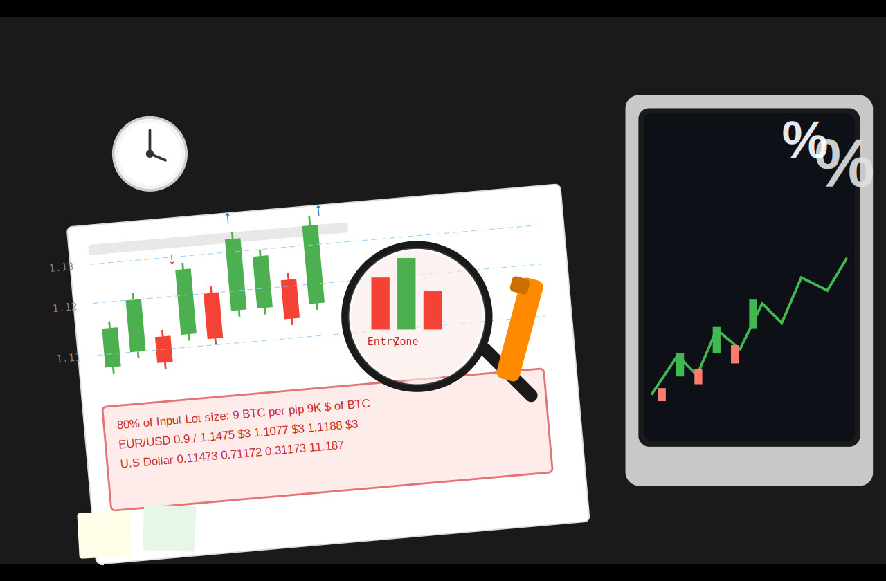
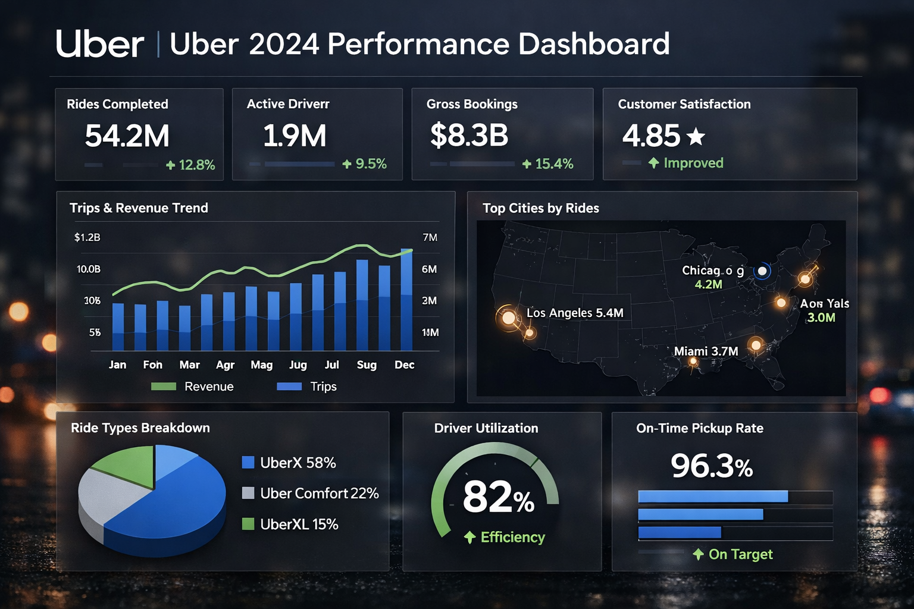
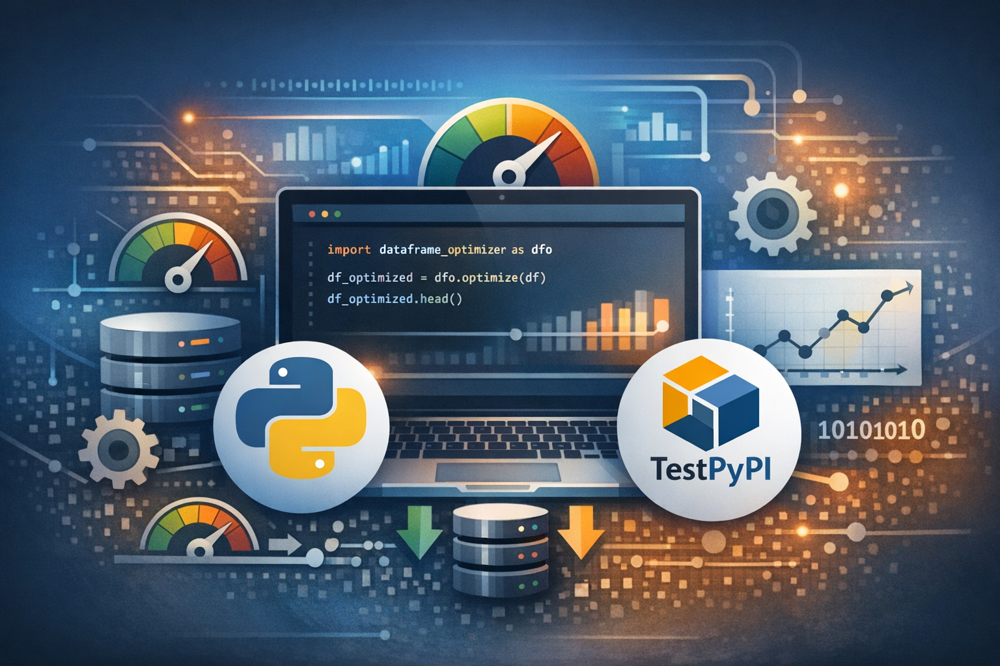

Data Scientist
I transform data into actionable insights through Machine Learning, Data Visualization and Statistical Modeling.
Hello, I'm Mohammed Ibrahim - a Data Scientist with a strong engineering foundation who discovered my passion for turning raw data into meaningful stories during my Master's program at the University of British Columbia. What started as curiosity about statistical patterns evolved into a mission to build complete data solutions that bridge the gap between complex algorithms and real-world impact.
My Journey Through Data: Throughout my academic and professional experience, I've walked the entire data science pipeline - from those late nights debugging ML models to the excitement of seeing my first interactive dashboard come to life. I've built end-to-end systems that process real-world operational and sensor data, deployed reproducible analysis pipelines using Docker and Quarto, and created interactive web applications using Python and Shiny that make data insights accessible to everyone, not just data scientists.
What Drives My Work: I'm particularly drawn to A/B testing and experimental design because I love the detective work of uncovering what really moves the needle for businesses. My background in applied machine learning and statistical modeling helps organizations make confident, data-driven decisions that matter. Whether that's predicting customer behavior, optimizing dashboards for stakeholders, or building tools that simplify exploratory data analysis.
The Technical Craft: My toolkit spans Python, R, SQL, cloud technologies, and modern data visualization frameworks like Plotly and Altair, but what excites me most is combining these skills to solve real problems. Whether it's building an interactive performance dashboard that gives stakeholders instant visibility into KPIs, or creating a Python package that makes data workflows faster and more reliable, I thrive on making the technical world more human and accessible.
Looking Forward: I'm eager to bring my data science skills and engineering mindset to a dynamic team where I can contribute to building scalable ML systems that create genuine business value. I believe the best data science happens when technical excellence meets collaborative innovation, and I'm excited to learn from experienced professionals while contributing my unique perspective shaped by working across academia, industry, and the field.
Projects Completed
Years Experience
Client Satisfaction

A machine learning project that predicts customer responses to bank marketing campaigns using various algorithms on the UCI Bank Marketing dataset. The model helps financial institutions optimize their marketing strategies and improve customer engagement.

An interactive data visualization tool for analyzing Uber's 2024 dataset, to showcase key performance metrics like total revenue and revenue per vehicle type and customer satisfaction per vehicle type to stakeholders, with a natural language querying feature using QueryChat.

A lightweight Python package that simplifies exploratory data analysis with minimal effort. Features quick statistical summaries, distribution visualizations, missing value detection, and correlation matrices - designed for speed and simplicity in Jupyter notebooks and Python scripts.
A deep dive into how data science is reshaping Spanish football. In 2014, La Liga partnered with Microsoft to build one of the most advanced sports analytics ecosystems in the world, leveraging Azure cloud infrastructure and machine learning to give clubs a competitive edge. The partnership introduced sophisticated modeling tools including Expected Goals (xG) to quantify shot quality and scoring probability, player performance tracking systems that analyze movement and contribution across every minute of play, and injury prediction models that help clubs proactively manage squad fitness and reduce time on the sidelines.
I'm passionate about leveraging data science to solve complex problems and drive innovation. Whether you're looking to optimize user experiences, build recommendation systems, or implement advanced analytics, I'd love to discuss how we can create impactful solutions together.